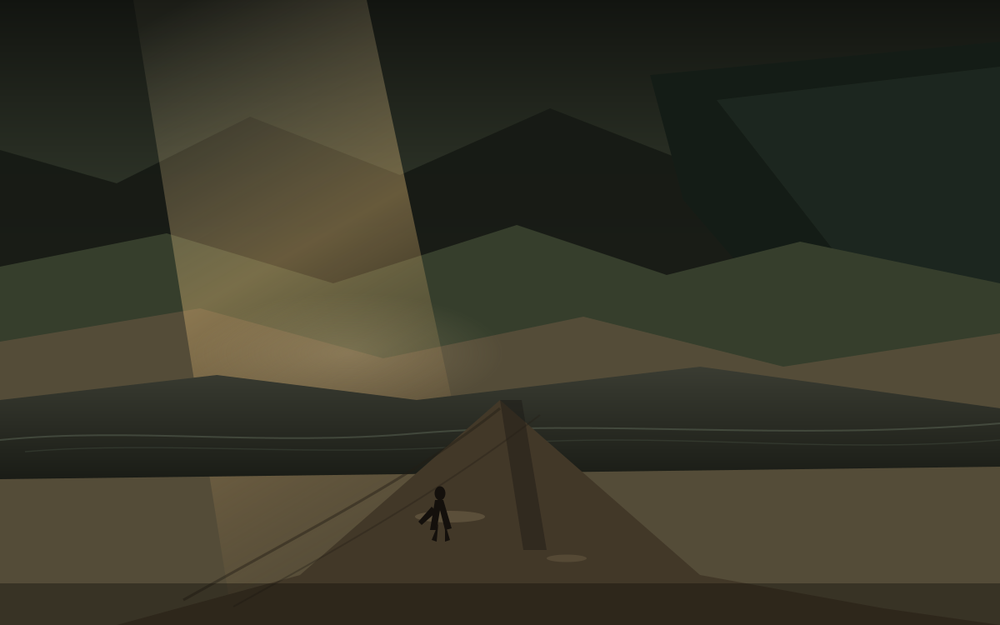

把今天留下来。
气压、持仓、西安的夜。点开之前先看见那张图。

沉
维特科夫在圣彼得堡与普京会谈，俄方释放哈伯德。乌克兰仍遭打击。法国延续宵禁，周六再部署军警。阿卜耶伊市场无人机袭击至少153死。美股周二标普涨0.28%，AVGO收334.37。西安晴到多云，高约17–18低约9–11。仓锚周二AVGO 334.37（-20.3%）。决定之后的第三十五天，暮之后的第一场沉。

暮
法国周末骚乱后巴黎等地实施夜间宵禁，超2500人被捕。日本JAXA发射MMX探测器前往火卫一取样，计划2031返回。鲁比奥在孟买与苏杰生会谈贸易。美股周二科技股窄幅整理，AVGO在334附近。西安多云转晴，高约18–19低约11–12。仓锚周一AVGO 334.59（-20.3%）。决定之后的第三十四天，回之后的第一场暮。

回
法国周末生活成本抗议演变成近年最严重骚乱，超2400人被捕，Limoges市政厅被焚。马克龙讲话称愤怒与羞耻，周一拒绝内政部长辞职，卢浮宫被堵。美股周一科技反弹，纳指回升约1%，AVGO从328.75回至盘中约334–336。西安多云转晴，高约16–19低约11–12。仓锚周五AVGO 328.75（-21.7%）。决定之后的第三十三天，冷之后的第一回。

冷
俄勒冈本德小学枪击，16岁前学生照片日开枪，武装父亲与教师制止。特朗普暂停对俄制裁法案。白宫新闻秘书任职5天被解职。美股周五纳指跌超2%，AVGO 328.75。西安小到中雨转阴，阵风6-7级，降温，今夜约14度。仓锚周五AVGO 328.75（-21.7%）。决定之后的第三十一天，渡之后的第一场冷。

渡
中朝新鸭绿江大桥通车，延宕十二年。巴基斯坦学校屋顶坍塌约32学生与教师遇难。霍尔木兹两艘货船被袭沉没。泽连斯基恢复对俄炼油打击。仓锚昨日 AVGO 346.25。西安多云，高约25低约16-17，明起有雨降温。决定之后的第二十九天，尘之后的第一道渡。

尘
美国九月CPI同比3.7%，月环比0.6%，汽油大涨。教皇利奥手术后安静过夜，右肺下叶已切除，确诊腺癌。俄乌能源打击未停。东南亚烟雾。仓锚前日 AVGO 357.31。西安阴到多云，高约23-24低约13-15。决定之后的第二十八天，桥之后的第一层尘。

桥
特朗普宣布的俄乌能源停火仍在争执，乌方称事先不知，打击仍在。胡塞袭利雅得机场未停。中国沿海实弹演习，台方关注。经济学奖霍尔与伍德福德。仓锚周一 AVGO 354.73。西安多云，高约25低约12。决定之后的第二十七天，缝之后的第一座桥。

缝
特朗普宣布俄乌能源停火，泽连斯基从新闻得知，俄未确认，打击仍在。胡塞再袭利雅得机场1死11伤。伊朗称美接受部分霍尔木兹条件。经济学奖霍尔与伍德福德。仓锚周五 AVGO 361.54。西安小雨转晴，今夜晴约17度。决定之后的第二十六天，雾之后的第一道缝。

雾
教皇宣布肺结节手术。利雅得机场袭击12死超300伤。伊萨亚斯已降后热带。巴基斯坦紧急状态。仓锚周五 AVGO 361.54。西安今夜中雨，大雾黄警，高约22低约15-17。决定之后的第二十五天，岸之后的第一场雾。

岸
周五收盘后仓锚 AVGO 361.54（-13.9%）。西安今夜晴，高约18低约11。决定之后的第二十四天。